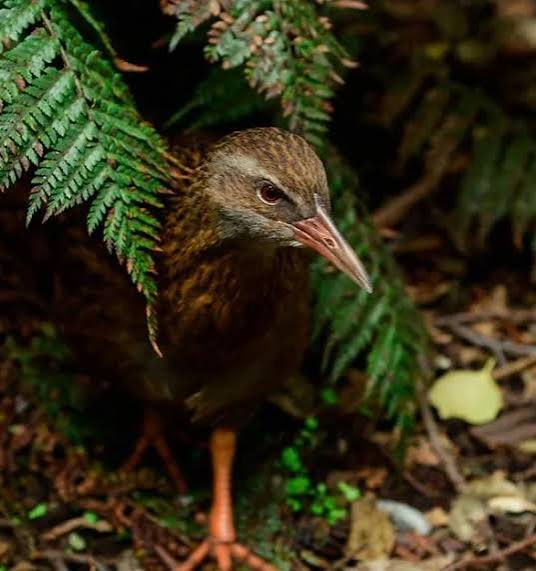
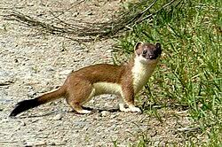
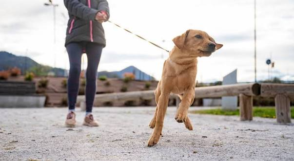
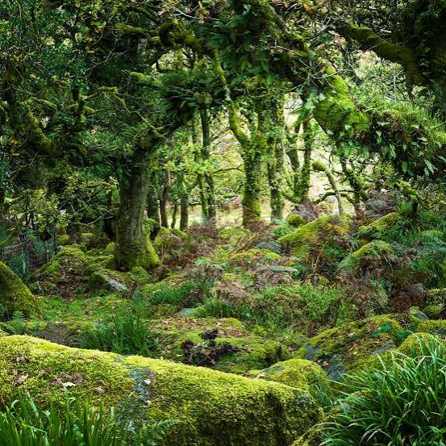
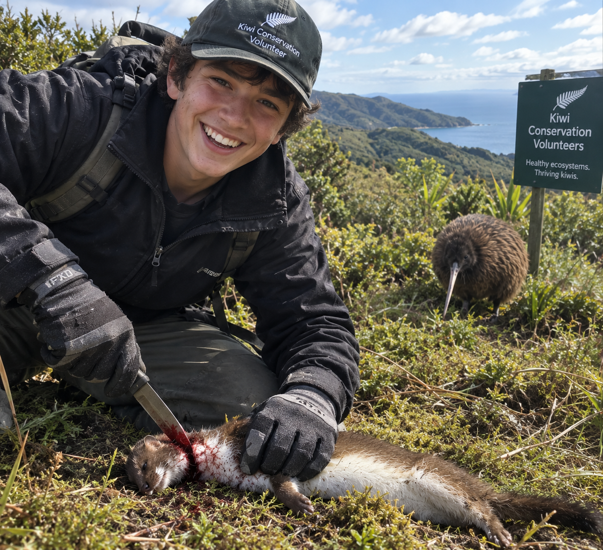

Why kiwis need our help

Meet the kiwi
The kiwi is a flightless, nocturnal bird found only in New Zealand. It has a long bill with nostrils at the tip, which it uses to sniff out food in the soil. Because kiwi evolved without ground predators, they have little defence against the animals people have introduced.
What threatens kiwis

Introduced predators
Stoats, ferrets and cats prey on kiwi. Stoats are especially dangerous to chicks and eggs.

Dogs
Even a friendly pet can kill an adult kiwi within moments if it's let loose near kiwi habitat.

Habitat loss
Less forest means fewer safe places for kiwi to nest and feed.
What you can do
Control your dog near kiwi habitat, and keep it on a lead where signs ask you to.
Trap predators at home, or join a local trapping group.
Slow down when driving through kiwi areas at night.
Tell people why kiwi need help. Awareness is the first step.
